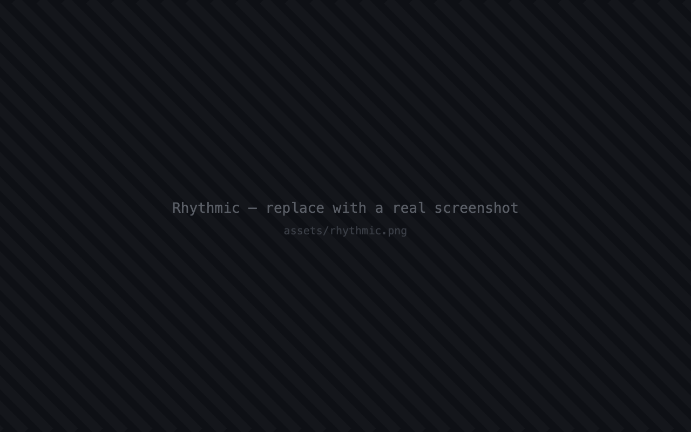

rhythmic — project workspace
assets/rhythmic.png

In development
Rhythmic
AI-first project management
A platform that aligns teams around project objectives — coordinating recurring stand-ups, tracking engagement, and surfacing where execution is drifting. AI-powered workflows built on the OpenAI and Claude APIs support planning, alignment, and team communication.